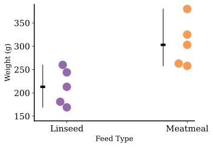
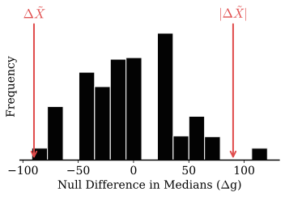
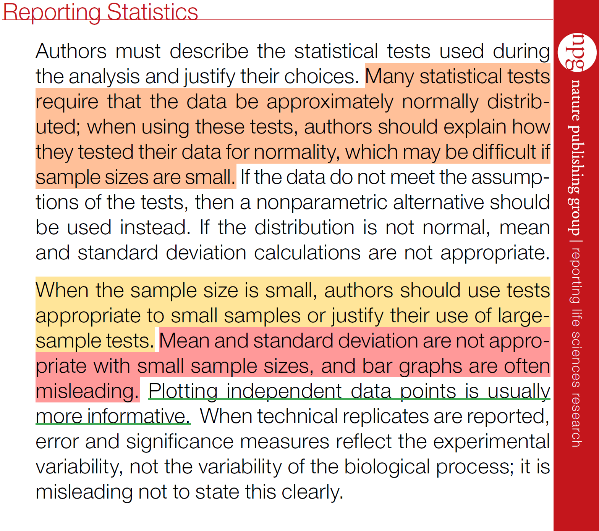

Consider small sample sizes and the need for non-parametric tests
Recap on the bootstrap models up to this point
Introduce methods for comparing more than two groups
Consider small sample sizes and the need for non-parametric tests
Recap on the bootstrap models up to this point
Introduce methods for comparing more than two groups
Sometimes, our experiment yields a small amount of data, but we will still need to make inferences, or decisions, based on the outcome.
Take for example, a study on the effects of diet on the weight of chickens.
A random selection of 10 chickens were fed either a linseed diet or a meatmeal diet.
We have $N=5$ in each group! What can we do?
| Weight (g) | Feed Type |
|---|---|
| 169 | linseed |
| 244 | linseed |
| 213 | linseed |
| 181 | linseed |
| 260 | linseed |
| 380 | meatmeal |
| 263 | meatmeal |
| 325 | meatmeal |
| 258 | meatmeal |
| 303 | meatmeal |
A Small Sample Size Causes Several Problems:
Even bootstrapping the median difference is unstable:
Nature agrees, the solution: Use non-parametric tests.
Rank-based tests are a type of non-parametric test that are used to test the difference between two groups.
The idea is to rank the data, effectively putting the data in a uniform scale, robust to small sample sizes, and non-Gaussian distributed, then testing the difference between the mean ranks.
Procedure:
Is this big? Do bigger ranks fall within one group or the other more frequently?
The p-value is the probability of observing a difference in mean ranks at least as extreme as the observed difference, assuming the null hypothesis is true.
# Import necessary libraries
import numpy as np
from scipy import stats
# Join and rank the original datasets
joined = np.concatenate([datasetA, datasetB])
ranks = stats.rankdata(joined)
# Get lengths of datasets
nA = len(datasetA)
nB = len(datasetB)
# Split ranks into groups
rankA = ranks[:nA]
rankB = ranks[nA:]
# Calculate original difference in mean ranks
orig_diff = np.mean(rankA) - np.mean(rankB)
# Bootstrap resampling
differences = np.zeros(n_boots)
for i in range(n_boots):
# Resample with replacement
boot_data = np.random.choice(joined, size=len(joined), replace=True)
boot_ranks = stats.rankdata(boot_data)
# Split bootstrap ranks
boot_rankA = boot_ranks[:nA]
boot_rankB = boot_ranks[nA:]
# Store difference in mean ranks
differences[i] = np.mean(boot_rankA) - np.mean(boot_rankB)There are many other non-parametric tests, including:
Our bootstrap process is a direct replacement for the Mann-Whitney U test.
Similar to the paired-bootstrap procedure, we can use a bootstrap analog of the Wilcoxon signed-rank test.
Procedure:
The bootstrap model is a model that uses the sample data to simulate conducting the experiment of resampling the population from which the data was drawn, and building a resampling distribution of the chosen statistic (descriptor).
We use this bootstrap sampling distribution to estimate the standard error of the statistic, i.e., we calculate the 95% confidence interval for the statistic, and we can use the bootstrap sampling distribution to test for the significance of the statistic (one-sample z-like test).
Code:
"""
Generic bootstrap
"""
import numpy as np
def get_boots(data, stat=np.mean, B=10000, **kwargs):
return stat(np.random.choice(data, size=(len(data), B)), **kwargs)As a replacement for Student's t-test, we can use the Big Box Model to test for the significance of the difference between two groups.
We use this bootstrap sampling distribution to estimate the standard error of the difference between the centers of two groups, assuming the the two groups are drawn from the same population.
The p-value answers the question: If the two groups are drawn from the same population, how likely is it that we would observe a difference between the centers of the two groups at least as large as the one we observed?
Code:
"""
Big Box Model
"""
import numpy as np
def bigbox_nhst(groupA, groupB, centroid=np.mean, B=10000):
actual_diff = centroid(groupA) - centroid(groupB)
combined_data = np.concatenate([groupA,groupB])
bootstraps = np.zeros(B)
for i in range(B):
boot_sample = np.random.choice(combined_data, size=len(combined_data), replace=True)
bootstraps[i] = centroid(boot_sample[:len(groupA)]) - centroid(boot_sample[len(groupA):])
return actual_diff, bootstraps

As a replacement for Welch's t-test, the Two Box Model compares the centers by recentering the data and then bootstrapping.
Code:
"""
Two Box Model
"""
import numpy as np
def two_box_nhst(groupA, groupB, centroid=np.mean, B=10000):
actual_diff = centroid(groupA) - centroid(groupB)
groupA_centered = groupA - centroid(groupA)
groupB_centered = groupB - centroid(groupB)
bootstraps = np.zeros(B)
for i in range(B):
bootA = np.random.choice(groupA_centered, size=len(groupA), replace=True)
bootB = np.random.choice(groupB_centered, size=len(groupB), replace=True)
bootstraps[i] = centroid(bootA) - centroid(bootB)
return actual_diff, bootstraps
The Paired Model replaces the paired t-test by bootstrapping the sign of the differences to construct the null hypothesis.
Code:
"""
Paired Model
"""
import numpy as np
def paired_nhst(groupPre, groupPost, B=10000):
differences = groupPost - groupPre
actual_mean = np.mean(differences)
bootstraps = np.zeros(B)
for i in range(B):
signs = np.random.choice([-1, 1], size=len(differences))
boot_sample = np.abs(differences) * signs
bootstraps[i] = np.mean(boot_sample)
return actual_mean, bootstraps
The Ranked Model is similar to the Big Box Method, using ranks from each resample and the average difference in ranks, replacing the Mann-Whitney U test.
A paired version of this model can replace the Wilcoxon Signed-Rank test.
Code:
"""
Ranked Model
"""
def ranked_data_bootstrap(datasetA, datasetB, n_boots=10000, random_state=None):
joined = np.concatenate([datasetA, datasetB])
ranks = stats.rankdata(joined)
nA = len(datasetA)
rankA, rankB = ranks[:nA], ranks[nA:]
orig_diff = np.mean(rankA) - np.mean(rankB)
differences = np.zeros(n_boots)
for i in range(n_boots):
boot_data = np.random.choice(joined, size=len(joined), replace=True)
boot_ranks = stats.rankdata(boot_data)
boot_rankA, boot_rankB = boot_ranks[:nA], boot_ranks[nA:]
differences[i] = np.mean(boot_rankA) - np.mean(boot_rankB)
return orig_diff, differences
The Two Box Effects Model is similar to the Two Box Model but without recentering, used to estimate the confidence intervals on the difference in the centers.
Code:
"""
Two Box Effects Model
"""
# Example code for Two Box Effects Model
import numpy as np
def two_box_effects_nhst(groupA, groupB, centroid=np.mean, B=10000):
actual_diff = centroid(groupA) - centroid(groupB)
bootstraps = np.zeros(B)
for i in range(B):
bootA = np.random.choice(groupA, size=len(groupA), replace=True)
bootB = np.random.choice(groupB, size=len(groupB), replace=True)
bootstraps[i] = centroid(bootA) - centroid(bootB)
return actual_diff, bootstraps

Previously, we explored inference about the difference in central tendencies of 2 groups.
How do we perform hypothesis testing for a difference in central tendency across more than two categories?
Could a similar approach to 2-groups work for multiple categorical variables be applied?
It's not that simple!

We must consider the variability of the data and how they relate to their own group as well as all the other groups.
In which panel are the differences between groups most apparent?
We must consider the variability of the data and how they relate to their own group as well as all the other groups.
In which panel are the differences between groups most apparent?
While the variability between groups in the two panels are similar, the increased variability of the data within the groups (right panel) makes it harder to differentiate the different groups.
An assessment of the difference in means between several groups depends on two kinds of variability:
Just knowing the sample means for the groups is not enough. If the values within each sample are very close to each other, we can detect a small difference in means as significant (as in the left panel). If there is more variability in the samples (as in the right panel), we need the group means to be farther apart.
Why analyze variability to test for a difference between multiple means?
If the null hypothesis is true (no difference between the sample means), the samples ALL come from the same underlying population.
If we select samples of size eight from a population where the mean is 38, how likely is it to see sample means as different as 30.75, 34.0, and 49.25?
We address both of these issues by measuring different aspects of the variability in the data.
Let's investigate the different aspects of variability in data.
We want a single measure that reflects how far apart the means are for all groups, without the need to calculate the difference between all the pairs of group means (as the number of groups increases, the number of pairs would increase even more).
We could calculate how far each group mean is from the "Grand mean" (the overall combined mean) instead.
Variability between groups:
distance from each group means to the Grand Mean.
Variability within groups:
distance from each data point to the Sample Mean.
Total variability:
distance from each data point to the Grand Mean.
Intuitively, for the same total variability, the greater the variability between groups will be compared with the variability within groups, the more likely the groups will be different from one to another.
An ANalysis Of VAriance (ANOVA) is a comparison between the variability between groups to the variability within groups. The statistic of interest that reflects this comparison between the two types of variability when performing an ANOVA is the F-statistic.
Total Variability
Between Groups Variability
Within Groups Variability
Each of these variabilities relies on the calculation of the sums of squares ($SS$) deviations.
Total Variance $SS_{\mathrm{Total}}$
Between Groups Variance $SS_{\mathrm{Groups}}$ (a.k.a $SS_{\mathrm{Between}}$)
"Error" Variance $SS_{\mathrm{Error}}$ (a.k.a. $SS_{\mathrm{Within}}$)
$$\sum_{i=1}^{n}(x_{i}-\hat{x})^2$$
$$\sum_{g=1}^{k}n_{g}(\bar{x}_{g}-\hat{x})^2$$
$$\sum_{g=1}^{k}\sum_{i=1}^{n_g}(x_{gi}-\bar{x}_{g})^2$$
The $F$-statistic is a ratio of the variability between groups and the variability withing groups, but uses the mean variability instead of the total variability for each component.
$F=\frac{\class{danger}{\textrm{Mean variability between groups}}}{\class{info}{\textrm{Mean variability within groups}}}$
$F=\frac{\class{danger}{\textrm{Mean SS}_{Group}}}{\class{info}{\textrm{Mean SS}_{Error}}}= \frac{\class{danger}{\frac{\textrm{SS}_{Group}}{(k-1)}} }{\class{info}{\frac{\textrm{SS}_{Error}}{(n-k)}}}$
Notes
$ F=\frac{ \class{danger}{\frac{\textrm{SS}_{Group}}{(k-1)}} }{ \class{info}{\frac{\textrm{SS}_{Error}}{(n-k)}} }=\frac{ \class{danger}{\frac{\sum_{g=1}^{k}n_{g}(\bar{x}_{g}-\hat{x})^2}{(k-1)}} }{ \class{info}{\frac{ \class{info}{\sum_{g=1}^{k}\sum_{i=1}^{n_g}(x_{gi}-\bar{x}_{g})^2} }{ (n-k) }} } $
$\bar{x}_g$: the mean of each group
$n_g$: sample size for each group
$\hat{x}$: Grand mean
Recall the formula for computing a standard deviation is: $s=\sqrt{\frac{\class{success}{\sum(x_{i}-\bar{x})^2}}{n-1}}$.
With a little algebra, we can turn this into an easy formula for computing the sum of squared deviations from the group mean within any group ($\textrm{SS}_{Error}$) using $(n_g-1)s_g^2$ where $n_g$ is the sample size and $s_g$ is the standard deviation from the sample in the $g^{th}$ group.
We can then rewrite:
Notes:
$F=\frac{\class{danger}{\textrm{Mean SS}_{Group}}}{\class{info}{\textrm{Mean SS}_{Error}}}$
$$\sum_{i=1}^{n}(x_{i}-\hat{x})^2$$
$$\sum_{g=1}^{k}n_{g}(\bar{x}_{g}-\hat{x})^2$$
$$\sum_{g=1}^{k}\sum_{i=1}^{n_g}(x_{gi}-\bar{x}_{g})^2$$
The Null Distribution for the $f$-statistic that is described by the parameters for within group ($n-k$) and between group ($k-1$) degrees of freedom.

The Null Distribution for the $f$-statistic that is
described by the parameters for
within group ($n-k$)
and between group ($k-1$) degrees of freedom.
A p-value is obtained by computing the area under the curve for $\mathbb{F}\geq f_{observed}$.